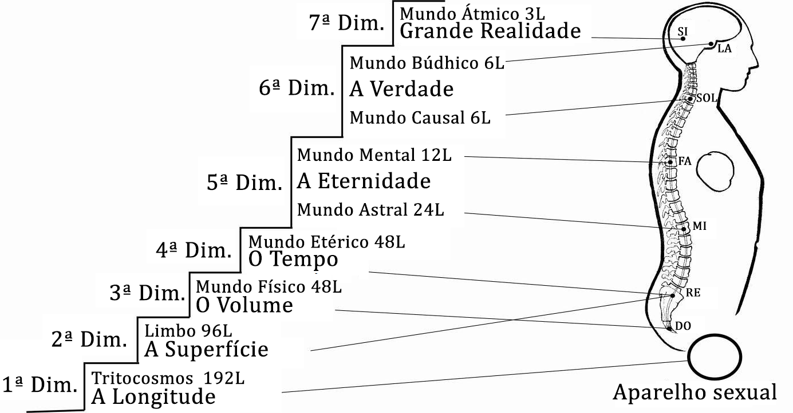
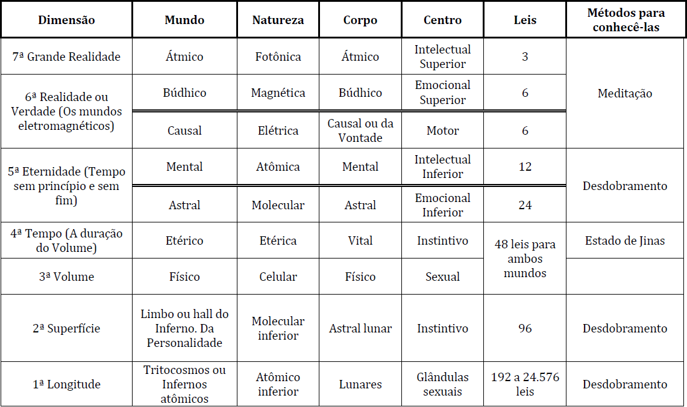

Conferência n°5/6
AS DIMENSÕES E ONDE ESTÃO EM NÓS
O QUE É UMA DIMENSÃO?
Uma dimensão é um Nível de Consciência. Existem tantas dimensões como níveis de consciência.
Em cada um dos desdobramentos se aumenta o número de leis e a materialidade.
SE CONHECEM SETE DIMENSÕES BÁSICAS NA NATUREZA:
Primeira dimensão: a longitude ou distância entre dois pontos. O Tritocosmo ou mundo de cada um dos átomos. Mundo dos monocerebrados e bicerebrados sem coluna vertebral. Todas as distâncias. Medidas lineares: centímetro, metro, quilômetro, vara, jarda, cotovelo, etc.
Segunda dimensão: a superfície ou deslocamento de uma linha no espaço. Todas as superfícies ou medidas de superfície: metro quadrado, pé quadrado, vara quadrada, quilômetro quadrado, hectare, alqueire, etc., etc.
São todas as superfícies das coisas ou volumes. E estão dadas por duas dimensões: comprimento por largura ou altura. Suas medidas são: cm², m², km², hm², etc.
Nesta dimensão encontramos nossa personalidade e toda a nossa superficialidade, as aparências dos volumes, as formas físicas.
Nesta dimensão encontramos todos os bicerebrados com coluna vertebral e veem o mundo como planos superpostos. Por carecer do terceiro cérebro não podem auto- realizar-se ainda.
Este é o mundo das 96 leis. E é denominado o Limbo ou hall do Inferno.
Terceira dimensão ou do volume: todos os corpos ou coisas com presença física orgânica ou inorgânica, com três dimensões: altura, largura, comprimento. Aqui encontramos nosso corpo físico e todas as medidas são cúbicas: cm³, m³, dm³, hm³, etc., etc... Como podemos apreciar, nesta dimensão estão contidas as duas anteriores.
Aqui habitam todos os bípedes tricerebrados ou animais racionais, equivocadamente chamados homens, com seus três cérebros. Porém que, por ter os três cérebros, podem se auto-realizar, humanizando-se e desanimalizando-se, em alguma de suas 108 existências como humanos.
Esta dimensão está manejada por 48 leis e as encontramos em cada uma das células representadas nos 48 cromossomos.
A importância do corpo físico ou material está em que este é um condensador de Energia Criadora Sexual e a pode transmutar ao unir-se com outra terra de símbolo contrário. Varão com fêmea.
Quarta dimensão ou tempo: é a duração de nosso corpo físico ou a duração de qualquer volume. Aqui encontramos nosso corpo vital, sujeito também às 48 leis do mundo físico. É a parte superior de nossa matéria. (Se vê tetradimensionalmente).
Este corpo representa nossas Águas, que são 90% de nosso corpo físico.
O tempo ao que nos referimos é o que media entre o nascimento e a morte.
Nestas águas encontramos todos os átomos metálicos de nosso sistema seminal contidos no campo áureo e estes são os que necessitamos regenerar e liberar.
Quinta dimensão ou eternidade: ao definir eternidade encontramos também o tempo em forma contínua, sem princípio nem fim. Vemos assim como a anterior dimensão esta contida nesta. Por isso encontramos aqui o passado, o presente e o futuro em forma contínua.
Vemos que tudo que tem passado terá futuro e isto impede viver o presente de instante em instante.
Nesta dimensão encontramos dois mundos: o Mundo Astral e o Mundo Mental, com seus corpos correspondentes e que manejam funções diferentes e tem suas próprias características.
- O corpo astral maneja 24 leis, é de natureza molecular, e é o Fogo ou desejo; maneja o nosso mundo emocional. Está controlado pelas Salamandras do Fogo.
- O corpo mental maneja 12 leis, é de natureza atômica e corresponde ao Ar ou sabedoria e origina o nosso intelecto. A forma de pensar de cada um de nossos átomos. Está controlado pelos Silfos e Sílfides do Ar.
Sexta dimensão: realidade ou verdade, aqui encontramos o que é, tem sido e será; os planetas do Cristo, os mundos eletromagnéticos.
Encontramos também dois níveis diferentes como são:
- O Mundo Causal ou da Vontade Consciente, onde encontramos o corpo da vontade regido por seis (6) leis, com natureza elétrica, formado por todos os elétrons de nossos átomos. Representa o Verbo ou Energia Criadora Sexual e todas as criações. É a Alma Humana
- O Mundo Búdhico ou da Consciência, onde encontramos o corpo Búdhico, regido por seis (6) leis, com natureza magnética, formado por todos os prótons dos átomos (a razão de ser do Ser). Este corpo se encontra levantado, não caiu. É a Alma Divina.
Sétima dimensão ou Grande Realidade: aqui está o mundo da Luz ou mundo Átmico, nos encontramos com nosso Íntimo, sujeito a três (3) leis. É de natureza fotônica, o mais baixo que pode chegar o nosso Ser, pois Ele vem do mundo do Espírito. É o princípio Crístico em cada um de nós. É o nosso Guerreiro particular. O Corpo Átmico tampouco caiu, se encontra levantado em cada um de nós.
Como podemos ver, na medida que subimos as dimensões são mais leves. As naturezas: celular, etérica, molecular, atômica, eletrônica, protônica e fotônica.
ONDE ESTÃO EM NÓS
As dimensões em forma ascendente e os assentos das dimensões nos centros da máquina humana.
Estudemos cuidadosamente isso:
Cada dimensão é um nível de consciência. Na medida em que vamos recuperando as Águas, o nível desta consciência vai subindo pela medúla espinhal, vértebra por vértebra e corpo por corpo.
Cada um dos corpos maneja uma dimensão diferente. Sem ter criado determinado corpo, não é possível manejar determinada dimensão.
A matéria prima para a criação de qualquer dos corpos é a Energia Criadora Sexual. Esta energia se encontra contaminada pelos diferentes eus que se nos manifestam dia a dia. Por tanto, há que descontaminar a energia de cada dia trabalhando diariamente.
Os corpos se criam na prática sexual (Nascimento). Trabalhando durante o dia equilibrando os centros com a auto-observação, impedindo que os eus esgotem a energia, para assim, poder dispor de Energia Criadora Sexual para a transmutação sexual. Pela noite copulamos para fixar a energia poupada.
Se entendemos que cada corpo tem suas próprias Águas ou Mercúrio e que cada um deve passar pelo seu próprio processo, compreenderemos que o ascenso aos níveis do Ser é lento e progressivo.
A conquista das dimensões nos permite governá-las com um menor número de leis cada vez. Esta conquista se faz no Abismo trabalhando nossa própria energia sexual, tirando a luz ou sabedoria das trevas.
Com o trabalho nos Três Fatores se leva a cabo toda a conquista das dimensões:
- A Morte no permite liberar a Consciência e purificar a Energia Criadora Sexual.
- O Nascimento no sexo nos permite a criação dos Corpos Existenciais do Ser.
- O Sacrifício pela Humanidade permite a desegoistização e o despertar do Amor que é a única lei do Absoluto.
CONCLUSÃO:
- Não é possível ascender nas dimensões superiores sem eliminar o pesado e grotesco de nossa personalidade.
- Não é possível ter representação real em uma dimensão sem ter criado o Corpo correspondente.
- Viemos ao planeta terra para Auto-realizarnos e conseguir a Consciência plena. Isto só é possível descendo nas infra-dimensões, onde se encontra presa o 97% de nossa Essência ou Consciência.
- Sem trabalhar sobre nós mesmos não é possível criar nada.
- É necessário também conhecer os métodos para ir comprovando essas dimensões
- Enquanto fazemos as distintas criações:
- Para ir da terceira a quarta dimensão se utilizam os Estados Jinas.
- Para ir da terceira a quinta dimensão se utilizam os Desdobramentos.
- Para ir da terceira dimensão à sexta e sétima dimensão se utiliza a Meditação.
É necessária a prática destes métodos para poder comprovar e conhecer em forma direta estas dimensões.
